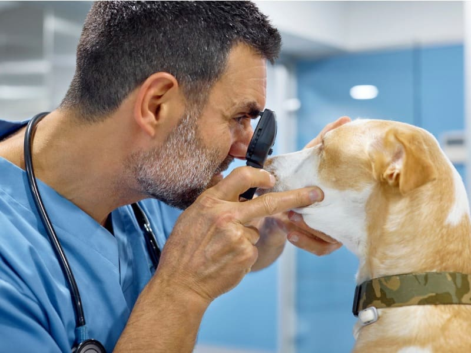

Oftalmologia Veterinária
A oftalmologia é uma área essencial da medicina veterinária, sendo uma das especialidades que mais crescem no Brasil. Isso se deve ao fato do grande número de animais que sofrem com problemas oculares que podem inclusive levar à cegueira se não tratadas corretamente.
Diversas são as doenças oftalmológicas que podem afetar cães, gatos, animais silvestres e grandes animais como úlcera de córnea, uveíte, glaucoma, catarata, perfuração ocular, afecções palpebrais, dos cílios e da terceira pálpebra.
Saiba Mais

-
Saiba Mais
Oftalmologia em animais silvestres
Para mais informações clique em saiba mais
-
 Saiba Mais
Saiba MaisOftalmologia em pequenos animais
Para mais informações clique em saiba mais
-
Saiba Mais
Oftalmologia em grandes animais
Para mais informações clique em saiba mais